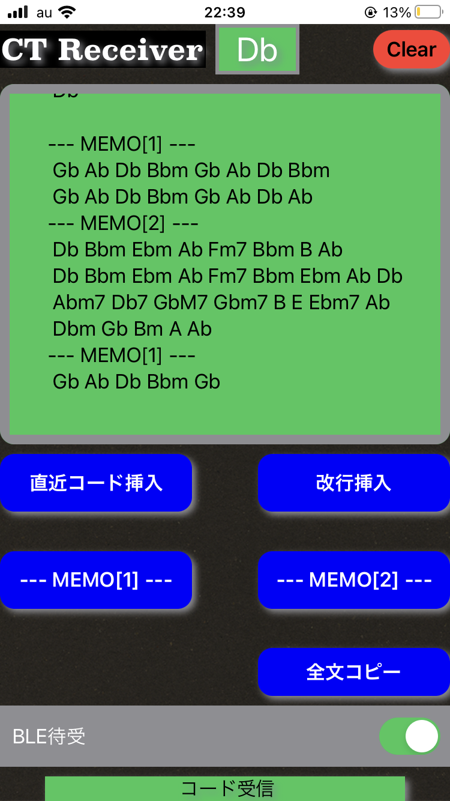

CT Receiver Infomation
CT Receiverは、YAMAHA製Chord Trackerなどの耳コピ用アプリなど、
リアルタイムにコード情報を出力する機器などから受け取ったコード情報を
テキスト化するためのアプリです。
使用方法
アプリを起動したら、BLE待受スイッチをONにします。
ChordTrackerやBLE対応のMIDI機器からデバイスを選択します。
外部機器から再生すると、コード情報とキー情報を抽出して表示します。 
動画はこちら